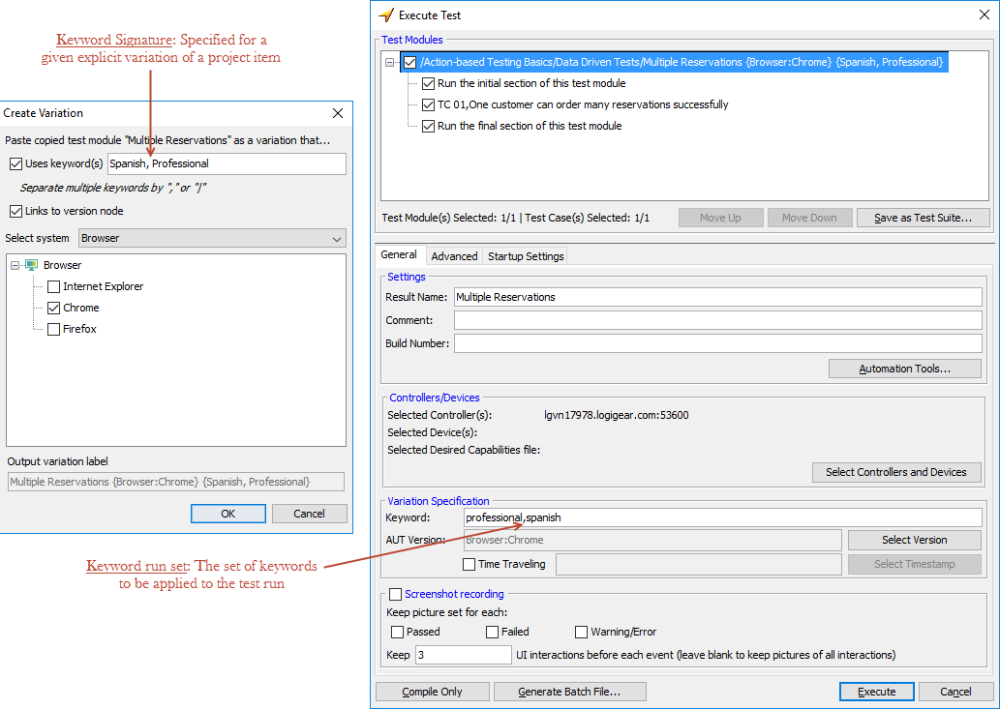

Assigning a keyword signature to a variation
A given variation is identified by its variation signature: the combination of the system versions it is linked to (system signature) and the keywords assigned to it (keyword signature). This topic discusses the keyword signature.
A keyword signature is the full set of keywords assigned to a given variation, along with two operators ( , and | ) that specify relationships between those keywords. (By contrast, the keywords that define an execution run, which are specified in the Execute Test dialog box just prior to execution, are referred to as the keyword run set.)
You can specify a keyword signature when you create a variation, in the Create Variation dialog box. (You may also modify an existing variation's signature through the Edit Variation dialog box.) Note that the keywords specified for a test run during execution cause TestArchitect to search for a matching keyword signature. (It should also be noted that the matching process is not always straightforward, and is fully discussed in Rules for executing with variations.)

As a practical matter, assigning keywords to variations involves creating one or more groups, or sets, of keywords. We'll call these keyword sets. But please note: keyword sets are not something that TestArchitect knows about – they're just a natural way for you to organize your keyword approach.
A keyword set relates to some trait of the AUT or testing environment that can differ between test runs, for which variations are created to address those differences. (Remember that linked variations are also used for this purpose; keywords are generally used for more discrete differences, however, rather than progressive ones.)
For example, if your application has versions that are targeted to different international markets, you would likely have interface definitions that need to vary (that is, have variations of themselves) based on language. Hence you might define a keyword set where each element specifies one of the language versions. If your application has versions for UK English, US English, Spanish, and French, your keyword set for language-based variations might be {EngUK, EngUS, Spanish, French}.
Similarly, if you offer separate Home and Professional editions of your application that require different variations of some project items, you might have a keyword set that looks like {Home, Professional}.
Let's examine some examples of how keyword signatures are created and assigned to variations. In each case we'll work with the login interface entity.
Case 1: Single-value keyword signature
Assume that our application's Login window has differences for each language version, such that a separate login variation is required for each one. We thus might create four variations of login with four different keyword signatures, each with a different keyword of our language-based keyword set:
login {EngUK}
login {EngUS}
login {Spanish}
login {French}(Of course, you can certainly use the default variation for one of the languages, and then create only three keyword-based variations, but it's often helpful to have explicitly-labeled variations for each case.)
Case 2: Keyword signature with multiple keyterms
It was mentioned earlier that a keyword signature contains one or more keywords along with
commas ( , ) and vertical bars ( | ). Another way to say it is that a keyword signature consists
of a string of keyterms separated by commas. (We'll
discuss the vertical bar operators, and keyterms, in the next example. For now, you may consider
a keyterm to be equivalent to a keyword.) Each comma is, in fact, an AND
operator, specifying that both the keyterms to its left and right identify the variation to
which the keyword signature is assigned.
Example: Assume that we offer both Home and Professional editions of our application for all but the French market, and that, in each case, the edition level also necessitates a variation to login. Hence we would require seven variations (aside from the default) for login:
login {EngUK, Home}
login {EngUK, Professional}
login {EngUS, Home}
login {EngUS, Professional}
login {Spanish, Home}
login {Spanish, Professional}
login {French}AND
operator. Hence, to take the first variation in the list, its signature essentially says, "I am
the login variation for the UK English version of the
Home edition of the AUT". - When there is only a single French edition of the application. In this case, you would test it by launching a test run with the keyword French specified.
- When the French version comes in both Home and Professional editions, but where the login interface definition is the same for both editions. In this case, you would specify two keywords to launch the test – for example, French and Home. (Keep in mind that, while the login interface entity may be the same for both editions, other French version project items may have separate variations, necessitating inclusion of the Home keyword at run time.) When running a test with multiple keywords, if TestArchitect cannot find a variation of some project item that exactly matches the keyword run set, it settles for the variation whose keyword signature is the largest subset of the keyword run set. In this case, that would be login {French}.
Case 3: Keyword signature with complex keyterms
So far we've equated keyterms with keywords. In fact, though, a keyterm can consist of
multiple keywords, effectively OR'd together with the vertical bar ( | ). The
value of doing this is that it reduces the number of explicit variations you need to create.
login {French, Home|Professional}
login {French, Enterprise}login {French, Home|Professional} is, in essence, two
effective
variations:login {French, Home}
login {French, Professional}
Share Via...